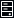
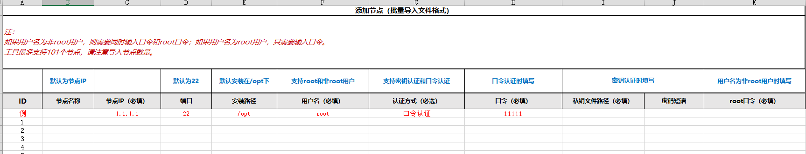

在待分析的服务器上安装节点。Web服务器（即安装鲲鹏性能分析工具的服务器）默认安装了节点，如果待分析的服务器与安装工具的服务器是同一个，请跳过该章节。
前提条件
- 已成功登录系统性能分析。
- 待添加节点的服务器已关闭SELinux，详细步骤请参见“常用操作>关闭SELinux”。

- 最多可添加101个节点，包括在Web服务器上默认安装的根节点。
- 不能将Docker容器环境添加为节点。
以端口映射模式创建的Docker容器不能添加Agent节点，以Host模式创建的Docker容器可以添加Agent节点。
- 如果节点添加失败，可在Web服务器上查看“/opt/hyper_tuner/sys_perf/logs/backend/agent_logs/”目录下以IP地址命名的日志文件，出现如下提示信息表示需要在节点服务器上手动关闭SELinux。
"The SELinux enforcing mode is enabled on the server, which will cause a tool installation failure".
操作步骤
- 在首页界面右上角的菜单选项中单击“节点管理”。
打开“节点管理”页面。
- 单击“添加节点”。
表1 添加节点参数说明 参数
说明
节点名称（可选）
输入节点名称。默认为节点服务器的IP地址。名称需要满足如下要求：
- 只能由字母、数字、特殊字符（@#$%^&*()[]<>._-!~+空格）组成
- 长度为1~32个字符
安装路径（可选）
输入安装节点的绝对路径，默认为“/opt”。
说明：输入的路径不能为“/home”，并且：
- 如果输入的路径属于root用户组，普通用户对各级路径应有可读（r）可执行（x）权限。
- 如果输入的路径属于malluma用户组，malluma用户对各级路径应有可读（r）可执行（x）权限。
节点IP
输入待安装节点的服务器IP地址。
端口
输入节点服务器SSH端口，默认为“22”。取值范围1~65535。
用户名
输入登录节点服务器的用户名，默认为“root”。
说明：为保证SSH通道安全，建议您使用普通用户进行节点的安装部署。
认证方式
选择认证方式。可选择：
- 口令认证
- 密钥认证说明：
选择“密钥认证”时需要在安装鲲鹏性能分析工具的服务器上设置SSH认证信息，详细操作请参见“常用操作 > 设置节点服务器SSH认证信息”章节。
口令
输入登录节点服务器的用户密码。
说明：- “认证方式”选择“口令认证”时显示该参数。
- 使用root用户安装的节点需要输入root口令，使用普通用户安装的节点需要输入用户口令和root口令。
私钥文件
输入用于登录节点服务器的SSH私钥文件的绝对路径，例如：“/home/malluma/is_rsa”
说明：“认证方式”选择“密钥认证”时显示该参数。
密码短语（可选）
输入登录节点服务器的SSH私钥文件的口令。如果未配置SSH私钥口令可省略该参数。
说明：“认证方式”选择“密钥认证”时显示该参数。
- 参考表1配置节点参数后，单击“确认”完成节点的添加。
已添加的节点支持如下操作：
- 修改：修改节点名称。
- 查看安装日志：查看系统缺少的组件及对应处理意见，日志内容支持拷贝和下载。
仅添加多节点的环境可以查看安装日志。
- 删除：删除节点。
- Web服务器上默认安装的节点不可删除。
- 删除节点后新建的分析任务将不再分析此节点，但仍可查看此节点历史分析报告（如果节点被工程占用，请修改工程后再删除节点）。
- 使用root用户安装的节点，在删除时需要输入root用户口令。使用普通用户安装的节点，在删除时需要输入用户口令和root用户口令。
- 运行目录/日志目录容量监控：显示节点磁盘空间容量的告警和恢复信息。
- 运行目录的最大使用空间限定为2GB，运行日志目录的最大使用空间限定为150MB。
- 当“磁盘空间剩余容量”小于“最大使用空间”的10%，或者“工具使用空间”达到90%，或者sever端磁盘剩余空间小于5G时，后台会停止正在该节点上运行的任务。如果任务不包含该节点，或任务包含了该节点但任务已处于分析期间，不停止该任务。新建的任务如果包括该节点则创建失败。
- 当“磁盘空间剩余容量”小于“最大使用空间”的20%，或者“工具使用空间”达到“最大使用空间”的80%，将产生告警。
- 当“磁盘空间剩余容量”恢复到大于“最大使用空间”的25%，并且“工具使用空间”小于“最大使用空间”的75%，告警将恢复，界面显示告警恢复。
- 节点的批量导入。
点击“批量导入”按钮，再点击模板表格进行模板下载。
图3 模板表格
按照模板表格填写完成需要批量导入的节点信息，在图2中“上传表格进行节点添加。
不可上传空表格，错误表格，不规范表格，请严格按照模板表格进行填写后再上传；如文件上传有误，会有错误信息进行提示。
- 节点的批量删除。
点击“批量删除”按钮，再点击模板表格进行模板下载。
图5 模板表格
按照模板表格填写完成需要删除的节点后，在图4界面上传表格进行删除。